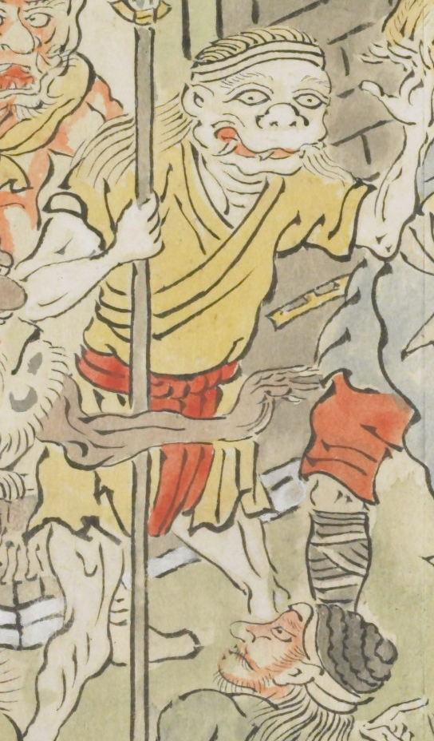

白い顔をした老婆のような鬼。長い髪で、数本の牙が生えている。黄色い上着を着ており、赤い褌を巻いている。
出典：親書誌：U426_nichibunken_0079：酒天童子絵巻；シュテンドウジエマキ／日付：2006／資源識別子：U426_nichibunken_0079_0001_0004
Copyright (c)2010- International Research Center for Japanese Studies, Kyoto, Japan. All rights reserved.